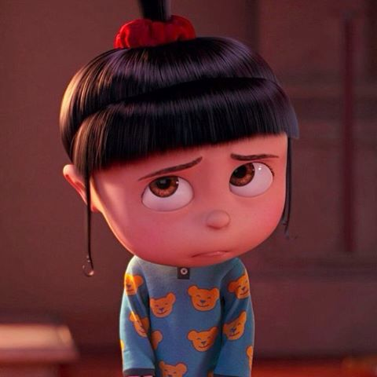
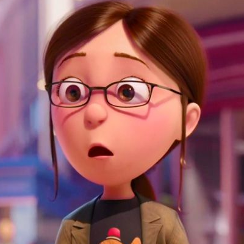
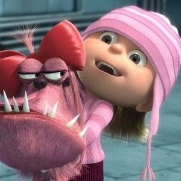

Главный персонаж. Он известен как злодей с необычным обаянием: высокий, худой, лысый, с длинным носом и вечно в черно-серой полосатой шарфике. Несмотря на образ суперзлодея, Грю оказывается добрым и заботливым, особенно после того, как в его жизни появляются приёмные дочери — Мargo, Эдит и Агнес. Он умён, изобретателен и склонен к хитроумным планам, но его комичные попытки быть злым часто приводят к забавным последствиям. Постепенно он превращается из эгоистичного антагониста в любящего отца, сочетая в себе харизму, юмор и человеческую теплоту.
Агнес Грю

Agnes Gru
Самая младшая приёмная дочь Грю. Она очаровательная, добрая и невероятно милая, с огромными глазами и маленьким хвостиком на голове. Агнес обожает плюшевых единорогов и часто выражает свои чувства с искренней наивностью, что делает её любимицей зрителей. Её трогательная доброта и непосредственность смягчают сердце Грю и помогают раскрыть в нём лучшие качества, показывая, что даже самые маленькие могут сильно влиять на жизнь взрослых.
Марго Грю

Margo Gru
Старшая приёмная дочь Грю. Она серьёзная, заботливая и рассудительная, часто выступает как «взрослый» среди своих младших сестер. Марго умна, наблюдательна и проявляет лидерские качества, беря на себя ответственность за Эдит и Агнес. Несмотря на свою серьёзность, она любит своих сестер и постепенно учится доверять Грю, показывая тёплую сторону своей личности. Ее смелость и рассудительность делают её важным звеном в семье, а также помогают Грю меняться к лучшему.
Эдит Грю

Edith Gru
Средняя приёмная дочь Грю. Она энергичная, смелая и немного озорная, всегда готова к приключениям и проказам. Эдит любит действовать самостоятельно и часто попадает в забавные или рискованные ситуации, что придаёт её образу динамичности и харизмы. Несмотря на свою озорную натуру, она заботится о сестрах и с течением времени учится доверять Грю, показывая, что её смелость сочетается с добротой и преданностью семье.